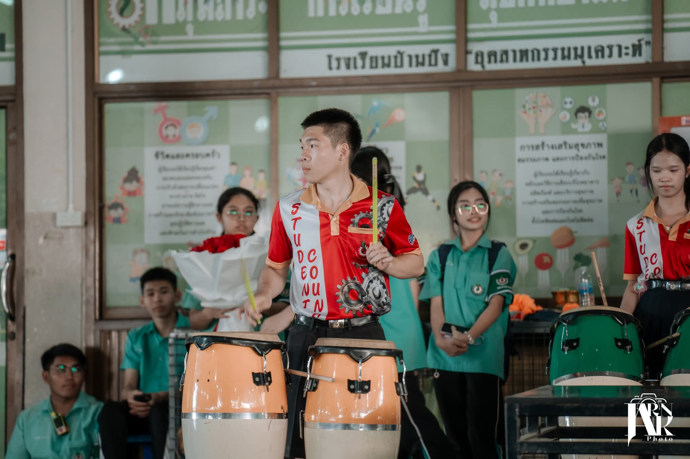

คณะกรรมการสภานักเรียน
บทบาทและหน้าที่
- เคยปฏิบัติหน้าที่เป็นคณะกรรมการสภานักเรียนของโรงเรียน
- ร่วมทำงานและประสานงานกับเพื่อน ๆ ในกิจกรรมของโรงเรียน
- รับผิดชอบงานที่ได้รับมอบหมายให้สำเร็จตามเป้าหมาย
สิ่งที่ได้รับ
- พัฒนาความรับผิดชอบและความอดทน
- ได้ฝึกการทำงานเป็นทีมและการสื่อสาร
- เรียนรู้การวางแผนและร่วมแก้ปัญหา